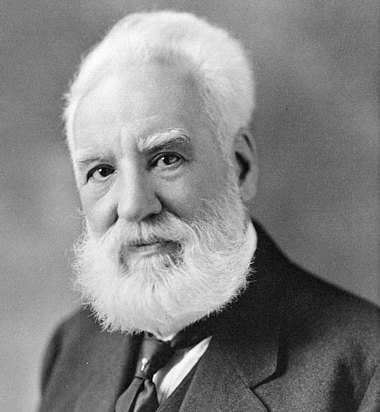

Alexander Graham Bell (Edimburgo, Escocia, Reino Unido, 3 de marzo de 1847-Beinn Bhreagh, Isla del Cabo Bretón, Canadá, 2 de agosto de 1922) fue un científico, inventor y logopeda británico, naturalizado estadounidense. Contribuyó al desarrollo de las telecomunicaciones y a la tecnología de la aviación.
Alexander Bell nació en Edimburgo, Escocia, el 3 de marzo de 1847.8 El hogar familiar estaba localizado en 16 South Charlotte Street, Edimburgo, y tiene una placa conmemorativa cerca de la puerta, señalándola como el lugar de su nacimiento. Era hijo del profesor Alexander Melville Bell y de Eliza Grace.
Su mejor amigo era Ben Herdman, un vecino cuya familia operaba un molino harinero. En una ocasión en la que los dos amigos, Ben y Aleck, hicieron una travesura, John Herdman (padre de Ben) les regañó diciendo: «¿Por qué no hacen algo útil?». Aleck preguntó qué era necesario hacer en el molino y le dijeron que descortezar el trigo, algo que se hacía mediante un tedioso proceso. Entonces, a la edad de 12 años, Bell construyó un dispositivo hecho en casa que combinó las paletas que rotaban con los sistemas de cepillos de clavos, creando una máquina de descortezamiento simple que funcionaba y fue utilizada durante muchos años.14 En agradecimiento, John Herdman les cedió un pequeño taller para que pudieran «inventar».
Bell había heredado de su madre una naturaleza sensible y un talento particular hacia el arte, la poesía y la música. Tocaba el piano sin haber recibido clases y era el pianista de la familia.15 A pesar de su carácter reservado e introspectivo, poseía talento para la mímica y los "trucos con la voz" relacionados con la ventriloquia, con los cuales entretenía a los invitados.15 Alexander también se vio sensibilizado por la sordera gradual de su madre (que empezó a perder el sentido del oído cuando Bell tenía tan solo 12 años). Bell y su madre desarrollaron un lenguaje de señas con el que Bell podía transmitirle discretamente la conversación familiar.16 Además desarrolló una técnica del discurso en tonos claros, modulados directamente de frente a su madre, donde ella lo oiría con claridad razonable.17 Fue la preocupación de Bell por la sordera de su madre lo que lo condujo a estudiar acústica.
Al igual que sus hermanos, Bell recibió sus primeros cursos escolares en casa de su padre. Luego fue matriculado en la Royal High School en Edimburgo, Escocia, que dejó a la edad de 15 años.20 No fue un alumno destacado en la escuela, sino que, por el contrario, faltaba a clases y obtenía calificaciones mediocres. Su interés principal estaba en las ciencias, especialmente la biología, y mostraba indiferencia por el resto de las materias escolares, para consternación de su exigente padre.
Volver